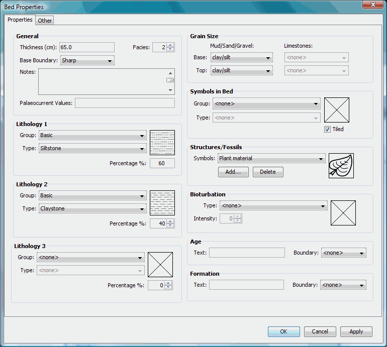

Once
a bed has been created it can be
modified using the properties window (Figure 2)
after selecting
the Bed
Properties option from the Edit
menu;
alternatively
click Bed Properties on the toolbar or double click the left
mouse button on the selected bed.

Figure 2. Change or view a
bed's properties